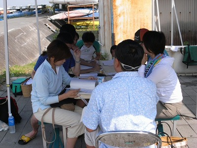
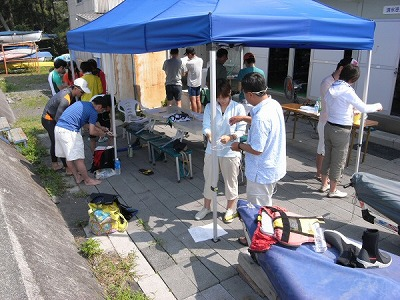
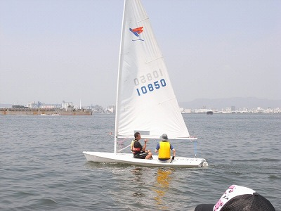
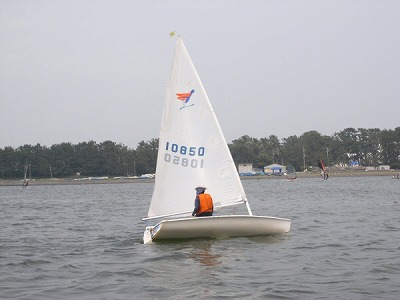

ヨット教室 | 2008年7月 幹事：サムちゃん |
|---|---|
| カヌー、カヤックがアウトドアだったら、ヨットだってアウトドアだろう（笑）…てなわけでヨット教室を開催。 開催と言っても、自ら開催したわけではなく、ＮＰＯ法人：清水港ヨット協会のヨット教室にみんなで参加したのだ。 アウトドア仲間たちが続々と集まってきた。午前８時３０分。 今日は天気が良さそうだ。炎天下か？。 南の風、順風弱が吹き始めている。 清水の三保海岸にある清水港ヨット協会の小型艇部会の艇庫前。 ９時、会費徴収から始まって座学。合計８人。 テキストを見ながら仲間の講師が説明。（スナイプ級というヨットで世界選手権６位かな…の杉山くん） | |
|  ヨットは何故はしるのか？ |  ロープワークの勉強 |
| ・ヨットの各部名称 ・なぜヨットは帆走しるか？。 ・ロープワークを２つ。モヤイ結びとエイトノット。 実際にロープワークを応用するには何度も経験しないと…。 | |
 メインセールをブームに取り付ける |  陸上で方向転換の練習 |
| そして陸上での体験シミュレーション。 シーホッパーを２、ミニホッパーを１，シカーラを１ハイの計４ハイを講習用に海へ出す準備。インストラクター６人と２１feetのレスキュー艇。 ボクはレスキュー艇に乗ってカメラ係（笑）。 さあ、海へ出てみよう。「習うより、慣れろ」だ。順風弱。講習には良い風だ。 午前中は講師と２人乗り。 シカーラには生徒２人と講師２人（若い女性＝国体選手かな） | |
 ティラー（舵棒）は、こうして持ってネ |  さあ、風上へ向かってみよう |
| センターボードとラダーを降ろして、ティラーを持とう。 メインシートの引き方。ジブの引き方、風上へ帆走しる感覚を養おう。 さあ、シーホッパーにも乗ってみよう。しごかれてください（笑）。 女性のＩさん。ミニホッパーはどうかな？。前を見よう。ずっと遠くを。頬に風を感じたかな？ | |
 真横から風を受けて（アビーム）の帆走 |  チンした場合の起こし方 |
| 同乗しての終わりのカリキュラムは「チンの起こし方」 数回チンすると、ヘロヘロになっちゃうね（泣）。 あっという間に、午前の部が終わりオカに上がって昼食。 みんなで「あ〜たら、こ〜たら」言い合いながらお弁当をパクパク…。 そして午後１時。 「さあ、一人で乗りましょう！」 「大丈夫、ダイジョーブ、なんとかなるよ！」 習うより慣れろ…だ。 さあ、いってらっしゃい！ チン起こしを覚えよう。 | |
 いい感じじゃないですか！ |  さあ、本番でチンを起こしましょう |
| いいぞいいぞ、ティラーを引いて、メイン引いて！（笑）。 やっている方は、ワケワカメ状態か。 向かっている方向が分からない。タックすると、なんだか分からない。 ティラーを引くと、どっちへ行くのか分からない。ティラーを押すと、どっちへ行くのか分からない。 いいぞいいぞ、その調子！ | |
|  風上へ向かって行こう！ |  グッド、セーリング |
| がっちり、みんなチンをして難しいことが分かったようだ。 頭で理解しようとすると、難しいかもしれない。 | |
| 写真＆コメント ｂｙ サムちゃん | |